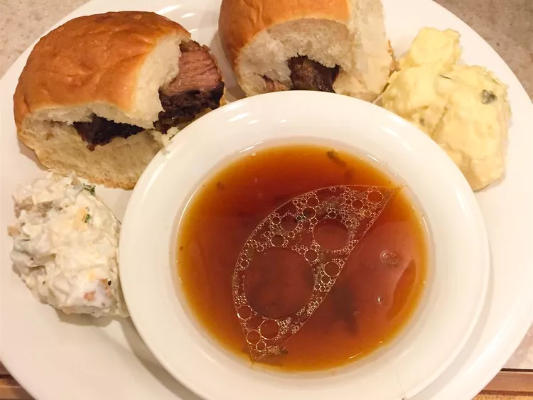

Slow Cooker 3-Ingredient French Dips

Description
Super simple slow cooker recipe for French dip sandwiches.
Ingredients
- 1 (3 pound) beef brisket
- 1 packet onion soup mix
- 1 (14 ounce) can beef broth
- 8 large French rolls, split
Directions
- Place beef brisket in a slow cooker. Mix onion soup mix into beef broth in a small bowl; pour over brisket.
- Cook on low 7 to 9 hours.
- Transfer brisket to a cutting board and cut into slices. Fill rolls with beef. Ladle juices from the slow cooker into 5 individual bowls to serve with sandwiches for dipping.